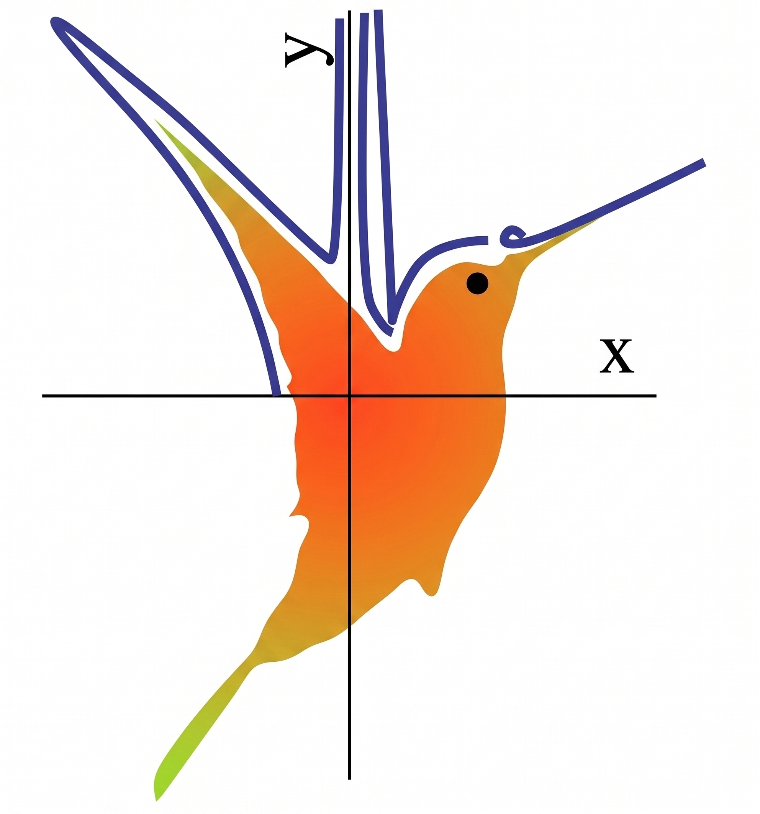

WasteSep: Multi-Modal Waste Classification and Routing
NICHE Robotics Lab · University of Michigan-Dearborn



Overview
Contamination is the most costly failure mode in recycling: a single soiled item can send an entire batch of recyclables to landfill. WasteSep addresses this by combining vision-language models with optical spectroscopy to classify waste items and route them into the correct stream, recyclable or landfill, with contamination detection incorporated as an explicit safety check. The system targets business and administrative waste streams in healthcare settings, and is developed in collaboration with UMHealth (Michigan Medicine).
Progress
An overview of the components developed to date, from waste detection and spectral contamination sensing to the distributed routing pipeline.
Fine-tuned vision-language model for waste detection
We fine-tuned Qwen3-VL-4B using GRPO, a reinforcement-learning approach, to detect and localize waste objects. Strong performance was achieved on textiles, paper, and glass.
Spectral sensing for contamination detection
Using an 18-channel VIS/NIR spectroscopy sensor (410–940 nm), we collected an initial spectral dataset and identified a band-localized signal in the 560–585 nm range that distinguishes clean from food-contaminated surfaces. This signal provides the basis for the contamination check.
Distributed real-time pipeline
The system runs on ROS 2 across two machines: a Raspberry Pi handles sensing and capture triggering, while a GPU workstation runs model inference, connected over a secure network. A dedicated decision node fuses the visual and spectral signals and contains the routing logic, applying conservative defaults so that uncertain or contaminated items are not placed in the recycling stream.
Separation of classification and routing
Classification and routing are kept separate: the model produces candidate labels, while all routing decisions are made by explicit logic. These rules are implemented in transparent, configurable software rather than in the model weights, and contamination detection always takes precedence over classification.

UR5E manipulater with Orbbec 335 Gemini mounted on flange

Qwen-3-VL 4B detections on sample

JSON output from VLM for easier and safer downstream parsing
For the vision stage we also build on a public trash-detection dataset released with the MRS-YOLO waste-detection study: 12,072 smartphone images spanning ten waste categories (metal, paper, glass, plastic, textiles, ceramics, and other recyclable and non-recyclable classes), captured under varied daylight, shadow, and artificial night lighting for robustness. In that work the dataset supports a YOLO-based detector reaching 74.5% mAP@0.5, making it a useful, diverse source of labelled waste imagery for training and evaluating our detection component.[1]
- Y. Ren, Y. Li, and X. Gao, “An MRS-YOLO Model for High-Precision Waste Detection and Classification,” Sensors, vol. 24, no. 13, art. 4339, 2024. doi:10.3390/s24134339
Acknowledgements
This work is supported by the Graham Sustainability Institute at the University of Michigan. We gratefully acknowledge our collaborators at Michigan Medicine (UM-Health) for their guidance on healthcare waste streams and for access to representative materials.